富士山の見える山
山頂、登山道から富士山がきれいに見える山ベスト50です。
| 順位 | 写真 | 山名 | 距離(km) | 方角 | 訪問日 | コメント |
|---|---|---|---|---|---|---|
| 1 | 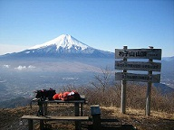 | 杓子山 | 19 | 北東 | 2006.11.25 | 富士山の絶好の展望台。富士山の広大な裾野から山頂を結ぶスカイラインを望むことができる。 |
| 2 | 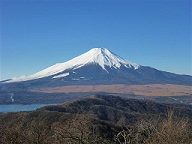 | 石割山 | 19 | 東 | 2014.12.23 | 手軽に登ることができ、山頂からは富士の絶景が広がる。 |
| 3 | 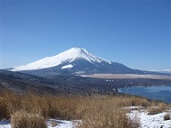 | 鉄砲木ノ頭 | 18 | 東 | 2021.01.31 | 明るく開けた山頂からは間近に富士山が迫る。 |
| 4 | 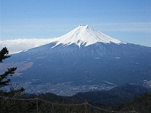 | 三ツ峠山 | 22 | 北 | 2007.03.18 | 富士山をはじめ周りの山々を望める大展望台。小屋に宿泊すれば朝夕の景色も堪能できる。人が多いのが欠点。 |
| 5 |  | 蛾ヶ岳 | 25 | 北西 | 2025.03.22 | 展望の良い山頂からは富士山と天子山塊を望むことができる。 |
| 6 | 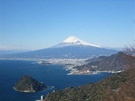 | 発端丈山 | 42 | 南東 | 2008.01.24 | 紺碧の海の背後に富士山がそびえる形になり、その配置が素晴らしい。山頂からよりも登山道途中からの方がよく見える。 |
| 7 | 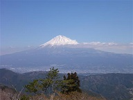 | 浜石岳 | 32 | 南西 | 2019.03.24 | 登山口の薩埵峠から、そして浜石岳山頂から、美しい富士山が眺められる。 |
| 8 | 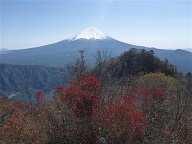 | 鬼ヶ岳 | 18 | 北 | 2018.10.21 | 鬼ヶ岳山頂から、そして手前の雪頭ヶ岳や登山道からもきれいな富士山の姿が眺められる。 |
| 9 | 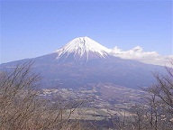 | 長者ヶ岳 | 18 | 西 | 2009.02.21 | 富士山の西側を望むことができ、大沢崩れが正面に見える。 |
| 10 | 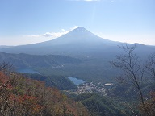 | 王岳 | 19 | 北 | 2022.10.23 | 登山道と山頂から、間近に富士山の姿が望める。 |
| 11 |  | 十二ヶ岳 | 18 | 北 | 2014.05.11 | 目の前に雄大な富士の姿、足元には西湖が広がる。山頂は狭く混雑しがち。 |
| 12 | 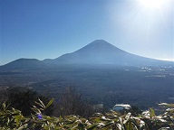 | 竜ヶ岳 | 16 | 北西 | 2015.12.20 | 笹原の登山道、そして山頂から存分に富士の姿を望むことができる。冬はダイヤモンド富士が見られることで有名。昼時は逆光になってしまうのが難点。 |
| 13 | 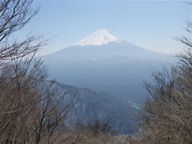 | 三方分山 | 20 | 北西 | 2025.03.22 | 樹林に囲まれた山頂は富士山の方面のみ切り開かれている。 |
| 14 | 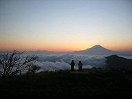 | 蛭ヶ岳 | 40 | 東 | 2007.11.24 | 眼下に広がる丹沢の山々の向こう側に富士山がそびえる。小屋に宿泊すれば朝夕の素晴らしい景色を望める。 |
| 15 | 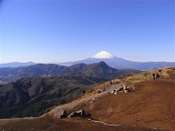 | 明神ヶ岳 | 31 | 東 | 2008.12.07 | 金時山の背後に美しい富士の姿を望むことができる。 |
| 16 | 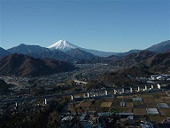 | 九鬼山 | 31 | 北東 | 2011.12.11 | 山頂からはさほど展望が開けないが、登山道の所々で富士山の展望ポイントがある。 |
| 17 | 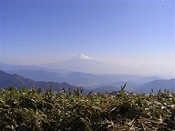 | 青笹山 | 35 | 南西 | 2009.04.11 | 笹原が広がる静かな山頂で、のんびりと富士山を眺められる。 |
| 18 | 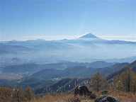 | 小楢山 | 47 | 北 | 2017.11.03 | 切り開かれた山頂からは甲府盆地と御坂山塊の奥に富士山の姿を望める。 |
| 19 | 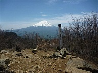 | 節刀ヶ岳 | 19 | 北 | 2014.05.11 | 山頂からは間近に富士山が望める。十二ヶ岳より奥にある分、人の訪れは少なく静かな山頂だ。 |
| 20 | 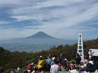 | 金時山 | 26 | 東 | 2010.10.23 | 富士山の展望台として有名。混雑していることが多いため少し落ち着かない。 |
| 21 |  | 足和田山（三湖台） | 15 | 北 | 2006.12.09 | 富士山のすぐ近くにある山。ほぼ真北に位置するため、昼時は逆光になる。 |
| 22 | 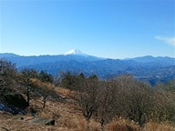 | 陣馬山 | 51 | 北東 | 2026.01.12 | 草原が広がる山頂からは、山々の向こうに富士山の姿を望むことができる。 |
| 23 | 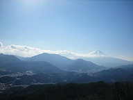 | 高川山 | 30 | 北東 | 2007.01.14 | 道志の山々と富士山の配置が素晴らしい。山頂は混雑することが多い。 |
| 24 | 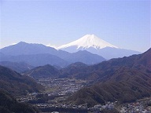 | 岩殿山 | 35 | 北東 | 2009.03.15 | 岩殿山の岩壁の上から富士山を望むことができる。 |
| 25 | 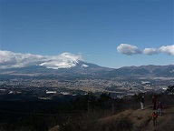 | 矢倉岳 | 28 | 東 | 2010.01.09 | 明るく開けた足柄峠や山頂からは富士山が真正面に望める。 |
| 26 | 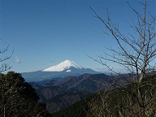 | 塔ノ岳 | 41 | 東 | 2009.12.19 | 晴れた日には美しい富士の姿を望める。午後は雲がかかることが多い。 |
| 27 | 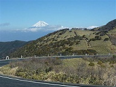 | 達磨山 | 46 | 南 | 2013.02.10 | 笹原が広がる山頂から駿河湾を隔てて遠くに富士の姿を望むことができる。 |
| 28 | 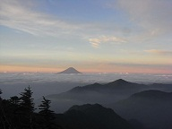 | 甲武信ヶ岳 | 61 | 北 | 2008.08.03 | 奥秩父の中心から遠く富士を望む。夜明けは特に美しい。 |
| 29 | 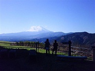 | 大野山 | 29 | 東 | 2008.11.30 | 丹沢の西方にある山で意外なほど大きな富士山が望める。山頂は牧場が広がっていて少々無粋。 |
| 30 | 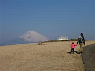 | 岩戸山 | 40 | 南東 | 2015.02.15 | 十国峠からは雄大な富士山が望める。また登山道にも所々で富士山が見えるポイントがある。 |
| 31 | 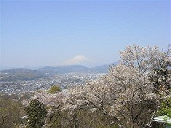 | 弘法山（権現山） | 47 | 東 | 2008.04.06 | 春には桜の花の向こうに富士山の姿を望むことができる。 |
| 32 | 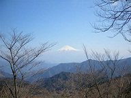 | 高ドッキョウ | 33 | 南西 | 2008.03.08 | 山頂からはさほど展望が開けないが、登山道から富士山が見えるポイントがある。 |
| 33 | 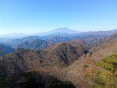 | 大石山 | 36 | 東 | 2025.11.22 | 同角山稜にある小ピークである大石山からは、岩の上に立つと西方に富士山を望むことができる。 |
| 34 | 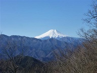 | 倉岳山 | 36 | 北東 | 2020.02.11 | 山頂から富士山の頭が見える。前衛の山が少し邪魔。 |
| 35 | 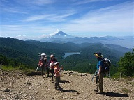 | 大菩薩嶺 | 45 | 北 | 2015.07.26 | 山頂からは富士山が見えないが、カヤトが広がる原からは遠くに富士山の姿が見える。 |
| 36 | 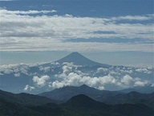 | 金峰山 | 58 | 北 | 2012.09.29 | 登山道や山頂から遠くに富士の姿を望める。 |
| 37 | 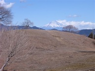 | 高山 | 51 | 南西 | 2025.02.23 | 広く開けた山頂からは安倍奥の山の向こう側に富士山の頭が見える。 |
| 38 | 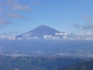 | 貫ヶ岳 | 29 | 南西 | 2020.11.29 | 山頂からの展望は広がらないが、登山道途中の晴海展望台からは素晴らしい富士山が望める。 |
| 39 | 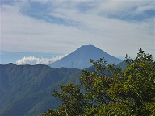 | 笹子雁ヶ腹摺山 | 29 | 北 | 2015.10.04 | 山頂から富士山の頭が見える。比較的富士山から近い位置にあるが、残念ながら裾野は見えない。 |
| 40 | 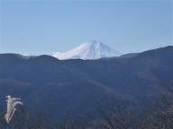 | 浅間嶺 | 52 | 北東 | 2022.11.27 | 山名の通り、山頂からは富士山の頭が見える。前の尾根に隠されて裾野は見えない。 |
| 41 | 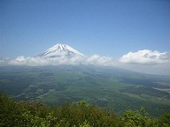 | 愛鷹山 | 15 | 南東 | 2007.05.26 | 登山道から間近に迫る富士山を望める。山頂からは頭しか見えない。 |
| 42 |  | 玄岳 | 41 | 南東 | 2020.01.13 | 展望の良い登山道と山頂からは富士山の姿を常に望むことができる。 |
| 43 | 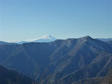 | 天目山 | 65 | 北 | 2015.01.11 | 展望の良い静かな山頂から、石尾根の向こう側に富士の姿が望める。 |
| 44 | 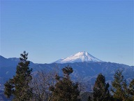 | 景信山 | 54 | 北東 | 2021.01.01 | 山頂は茶屋があって賑わっている。展望台から富士山の姿が見える。 |
| 45 | 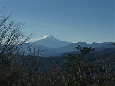 | 三頭山 | 49 | 北東 | 2013.11.22 | 賑やかな三頭山西峰は富士山方面の木が切り開かれている。 |
| 46 | 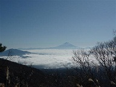 | 編笠山 | 73 | 北西 | 2009.12.06 | 明るく開けた山頂から雲海の向こうに遠く富士山の姿が見える。 |
| 47 | 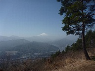 | 百蔵山 | 39 | 北東 | 2010.03.14 | 扇山とセットで登られることが多い。いずれの山頂からも富士山が望める。 |
| 48 | 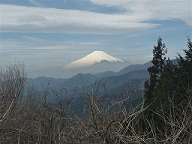 | 岳ノ台 | 45 | 東 | 2014.03.29 | 山頂にある静かな展望台から富士山の姿を望める。 |
| 49 | 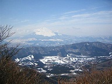 | 神山 | 30 | 南東 | 2008.02.10 | 山頂は展望がないが少し先に富士山の展望台がある。箱根の外輪山の向こうに富士山の姿を望める。 |
| 50 |  | 升形山 | 52 | 北 | 2019.11.10 | 山頂からは黒富士と富士山の2つの富士が並んでいる姿を望むことができる。 |